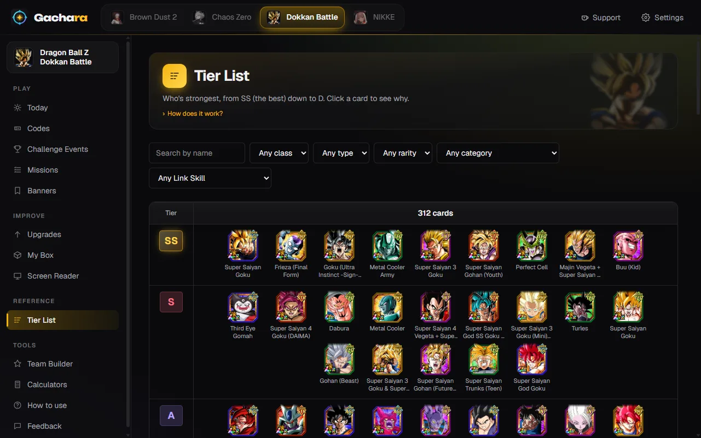

Dragon Ball Z Dokkan Battle
The best team from your own box for every hard Dokkan stageIl team migliore del tuo box per ogni stage difficile di Dokkan
Gachara reads your cards from the game screen, then plays out each stage of the Challenge Events against the real boss: it picks the team that clears it with your box, the friend to bring, the items, and how to play each turn. When nothing you own can clear it, it says so.Gachara legge le tue carte dallo schermo del gioco, poi simula ogni stage degli Eventi Challenge contro il boss vero: sceglie il team che lo passa con il tuo box, l'amico da prendere, gli item e come giocare ogni turno. Quando con quello che hai non si passa, te lo dice.
Download for Windows, Android or iPhoneScarica per Windows, Android o iPhone Use it in your browserUsala nel browser
Free, no ads, no account needed.Gratis, senza pubblicità, senza account obbligatorio.

What Gachara does for Dragon Ball Z Dokkan BattleCosa fa Gachara per Dragon Ball Z Dokkan Battle
Team for every missionTeam per ogni missione
Red Zone, Supreme Magnificent Battle, Extreme Z-Battles, Ultimate Clash, Frontier: press "Show my team" on a mission (category, type, no items) and get the best team you can field, with rotations and the friend.Red Zone, Supreme Magnificent Battle, Extreme Z-Battle, Ultimate Clash, Frontier: premi "Mostra il mio team" su una missione (categoria, tipo, senza item) e hai il team migliore che puoi fare, con le rotazioni e l'amico.
Your box from the screenIl box dallo schermo
Scroll your Character list and Gachara saves forms, levels, EZA and Hidden Potential by itself: on PC with the phone mirrored, on Android directly, on iPhone from a screen recording. The end of a multi-summon counts your new copies.Scorri la lista Character e Gachara salva da sola forme, livelli, EZA e Hidden Potential: sul PC con il telefono duplicato, su Android direttamente, su iPhone da una registrazione. La fine di una multi conta le copie nuove.
The boss, phase by phaseIl boss, fase per fase
HP, ATK, DEF, damage reduction, super attacks and passives of every phase, how much each of your cards takes from a normal hit and a super, and the teams other players cleared it with.HP, ATK, DEF, riduzione dei danni, super e passive di ogni fase, quanto prende ogni tua carta da un colpo normale e da un super, e i team con cui l'hanno passato gli altri giocatori.
Tier list, banners and upgradesTier list, banner e potenziamenti
The DokkanStats community ratings in one tier list, open banners with the featured cards you already own, missions in one place, and what to awaken or EZA next.I voti della community di DokkanStats in una tier list sola, i banner aperti con le carte in evidenza che hai già, le missioni in un posto solo, e cosa risvegliare o portare in EZA.
Safe for your accountSicura per il tuo account
Gachara only looks at what the game shows on screen, or at the game's official site the way you would by scrolling it. It never reads the game's memory or its network traffic, and it never plays for you.Gachara guarda solo quello che il gioco mostra sullo schermo, o il sito ufficiale del gioco come faresti tu scorrendolo. Non legge mai la memoria del gioco né il suo traffico di rete, e non gioca mai al posto tuo.
Also for Dokkan Battle, NIKKE, Chaos Zero Nightmare and Brown Dust 2. More about Gachara.Anche per Dokkan Battle, NIKKE, Chaos Zero Nightmare e Brown Dust 2. Di più su Gachara.